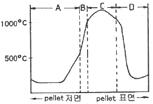
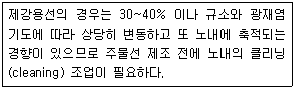
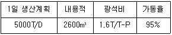
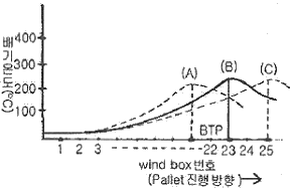
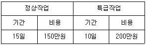

제선기능장 (2015-04-04 기출문제)
1과목: 임의 구분
1. 다음 중 소결원료로서 신원료에 해당하는 것은?
- 분광 + 반광
- 분광 + 규석
- 반광 + 분코크스
- 혼합원료 + 석회석
(정답률: 81%)

2. 파이넥스 공정의 흐름으로 옳은 것은?
- HCI → 용융로 → 유동환원로 → 분광석
- HCI → 분광석 → 용융로 → 유동환원로
- 분광석 → HCI → 유동환원로 → 용융로
- 분광석 → 유동환원로 → HCI → 용융로
(정답률: 69%)
3. 코크스로 내 연소실의 건류온도는?
- 350 ~ 400℃
- 500 ~ 600℃
- 1200 ~ 1300℃
- 1400 ~ 1500℃
(정답률: 92%)
4. 소결배합시 첨가물에 대한 효과를 설명한 것 중 틀린 것은?
- 생석회 첨가시 환원분화지수의 개선 및 성분변동이 감소된다.
- 생석회 첨가시 의사입화를 촉진시켜 소결광 강도를 높인다.
- 수분 첨가시 미분원료의 응집에 의한 통기성이 향상된다.
- 수분 첨가시 소결층 내의 온도 구배를 개선하여 열효율을 저하시킨다.
(정답률: 80%)
5. 고로 조업에서 탈황은 어느 조건에서 잘 되는가?
- 산성이 높을 때
- 탄소량이 높을 때
- 염기도가 높을 때
- 슬래그의 양이 적을 때
(정답률: 90%)
6. 소결과정 중 확산형 소결광에 대한 설명으로 틀린 것은?
- 강도가 높다.
- 기공률이 크다.
- 피환원성이 좋다.
- 저온소결의 경우 발생한다.
(정답률: 55%)
7. 원료탄에서 Gieseler 유동도의 점착성을 판정하는 기준이 되는 것은?
- 인장
- 응력
- 탄성계수
- 교반봉의 회전수
(정답률: 88%)
8. 고압 조업의 효과를 설명한 것 중 틀린 것은?
- 출선량의 증가
- 연진의 감소
- 코크스 비의 증가
- 걸림 등 노황 불안정 방지
(정답률: 90%)
9. 고로 및 소결에 사용되는 적철광에 관한 설명 중 틀린 것은?
- 환원성이 우수하다.
- 적철광의 화학식은 Fe3O2 이다.
- 괴광의 경우 열균열을 일으킬 수 있다.
- 괴광의 경우 환원분화 현상을 일으키는 경우가 있다.
(정답률: 81%)
10. 200kg 의 순수한 석회석(CaCO3) 중 CaO 의 함량은 얼마인가? (단, 원자량은 Ca : 40, C : 12, O : 16 이다.)
- 56kg
- 84kg
- 112kg
- 156kg
(정답률: 84%)
11. 코크스로의 최고 가동율을 옳게 나타낸 것은?
- (coke oven 의 수 / 일일 최고 압출문수 ) × 100
- (일일 최고 압출문수 / coke oven 의 수 ) × 100
- (일간 최대작업 가능문수 / 일간 평균작업 가능문수 ) × 100
- (일간 평균작업 가능문수 / 일간 최대작업 가능문수 ) × 100
(정답률: 91%)
12. 배소(roasting)에 관한 설명 중 관계가 없는 것은?
- 자철광을 환원 배소하여 적철광화시킨다.
- 철광석의 부착수분은 110℃ 정도의 가열로 제거한다.
- 산화도의 변화를 일으키거나 S, As 등의 유해성분을 제거한다.
- 광석이 녹지 않을 정도까지 가열하여 화합물 및 탄산염을 분해시킨다.
(정답률: 72%)
13. 광재에 대한 일반적인 설명 중 틀린 것은?
- 염기도가 높을수록 융점이 높아진다.
- 염기도가 높을수록 탈황이 잘된다.
- Al2O3 가 많을수록 융점이 높아진다.
- MgO는 광재의 유동성을 나쁘게 한다.
(정답률: 82%)
14. 파이넥스 유동로 내부의 가스 유속을 관리하는 이유가 아닌 것은?
- 분광 로스량 감소
- 더스트(dust) 비산 방지
- 사이클론(cyclon) 막힘 방지
- 고 강도의 성형탄 제조
(정답률: 88%)
15. 캐스터블 내화물의 특징이 아닌 것은?
- 소성이 필요 없다.
- 필요한 형상이나 치수로 성형이 가능하다.
- 접합부가 없는 로체를 구축할 수 있다.
- 로온의 변동에 민감하여 스폴링을 일으키므로 주의한다.
(정답률: 75%)
16. 그림은 소결 과정 중 점화 후 약 10분이 경과하였을 때 소결층 내의 수직 단면상 온도 분포를 나타낸 것이다. B가 나타내는 것으로 옳은 것은?

- 습윤대
- 연소대
- 건조대
- 산화대
(정답률: 90%)
17. 용선과 슬래그를 저장하는 부분으로 코크스의 연소량을 결정하는데 중요한 부분은?
- 노구
- 노상
- 보시
- 노복
(정답률: 68%)
18. 코크스 중 회분을 나타내는 식으로 옳은 것은?
- 장입탄 중 회분 / 전 코크스 실수율
- 전 코크스 실수율 / 장입탄 중 회분
- 장입탄 중 회분 / 전 코크스 회분
- 전 코크스 회분 / 장입탄 중 회분
(정답률: 72%)
19. 열풍로의 돔(Dome) 온도가 관리치 이상으로 상승하였을 때 취하는 조치사항으로 가장 적합한 것은?
- 송풍온도를 높인다.
- 열풍로 교체를 지연시킨다.
- 연소용 공기량을 증가시킨다.
- 연소용 가스량을 증가시킨다.
(정답률: 82%)
20. 코크스를 사용한 고로의 슬래그 주요 3가지 성분이 아닌 것은?
- CaO
- ZnO
- SiO2
- Al2O3
(정답률: 84%)
2과목: 임의 구분
21. 분광 소결시에 첨가하는 분코크스의 평균입도의 목표치 크기(mm)는 어느 정도가 적합한가?
- 1 ~ 1.6mm
- 20 ~ 30mm
- 40 ~ 50mm
- 60 ~ 70mm
(정답률: 85%)
22. 고로의 유효 내용적이란?
- 노 바닥에서부터 노구까지의 용적
- 풍구수준면에서 장입기준선까지의 용적
- 로저부에서 장입기준선까지의 용적
- 출선구로부터 장입기준선까지의 용적
(정답률: 89%)
23. 열풍로 조업에서 고온 송풍하기 위하여 행해지는 조업이 아닌 것은?
- 조습송풍
- 연소 가스량의 규제
- 열량이 높은 COG가스 사용
- 열풍로 교체시간의 단축
(정답률: 74%)
24. 코크스로에서 건류시의 내부거동 및 코크스에 대한 설명으로 틀린 것은?
- 노 벽면에 가까운 부분은 급속하게 건류된다.
- 노 벽측에 생성된 코크스는 금속광택으로 치밀하다.
- 노 중심 근처에서는 반용융상태의 연화 용융층이 존재한다.
- 노 중심축에서 생성된 코크스는 조업 특성이 우수한 장점이 있다.
(정답률: 63%)
25. 고로 내에서 환원되기 쉬운 것부터 옳게 나열한 것은?
- FeO → Fe2O3 → SiO2 → CaO
- FeO → FeO → Fe2O3 → SiO2
- Fe2O3 → FeO → P2O5 → MnO
- SiO2 → CaO → FeO → Fe2O3
(정답률: 83%)
26. [보기]는 어떤 성분의 수율을 설명한 것인가?

- P 수율
- S 수율
- Ti 수율
- Mn 수율
(정답률: 84%)
27. 고로 조업에 관한 설명 중 틀린 것은?
- 고로 내화물은 강도가 높아 초기 예열 작업이 불필요하다.
- 고로 조업시 산소 부화 송풍을 하면 생산성을 향상시킬 수 있다.
- 고로 장입물의 하강 속도가 느리면 송풍량을 증대할 필요가 있다.
- 공기구멍 앞의 연소대 온도가 지나치게 높으면 행깅, 슬립 등의 원인이 된다.
(정답률: 89%)
28. 고로의 감척조업에 대한 설명으로 틀린 것은?
- 고로조업 중 휴풍 조업 과정이다.
- 노내 장입물 레벨을 저하시키는 조업이다.
- 노내 광석 잔존 여부의 판단은 용선 중 Mn 상승으로 판단한다.
- 주수 냉각 조업이 완료된 시점부터 감척조업에 들어간다.
(정답률: 76%)
29. 염기도가 1.0 이상이 되도록 석회석을 첨가하여 제조된 소결광에 대한 설명으로 틀린 것은?
- 석회석 분해열만큼 코크스가 더 필요로 한다.
- 자용성 소결성 제조로 고로 사용시 연료비가 저하한다.
- 소결광은 다공질로 만들어져 천연광석보다는 피환원성이 좋다.
- 규산철의 생성이 억제되어 고로에서 노내 반응이 촉진된다.
(정답률: 62%)
30. 코렉스(COREX) 공법에 대한 설명으로 틀린 것은?
- 8 ~ 35mm의 정립광을 사용한다.
- 철광석은 소결 과정을 거친다.
- 용융가스화로 내에 석탄충진층을 형성한다.
- 부원료는 약 70%가 소성된 후 DRI(direct reduction iron)스큐류에 의해 기계적으로 노외로 배출되어 용융가스화로로 투입된다.
(정답률: 72%)
31. 장입장치의 요구 조건이 아닌 것은?
- 원료를 균일하게 장입하여야 한다.
- 장입방법은 고정되어 변경되어서는 안된다.
- 원료를 장입할 때 가스가 새지 않도록 해야 한다.
- 조업 속도에 따라서 충분한 장업 속도를 가져야 한다.
(정답률: 93%)
32. 품위 55.10%의 철광석으로부터 철분 93.45%의 선철 1.5톤을 만드는데 필요할 광석량은 몇 kg인가? (단, 철분이 모두 환원되어 철의 손실이 없다고 가정한다.)
- 1476
- 1576
- 2444
- 2544
(정답률: 82%)
33. 코크스의 연료비 계산식으로 맞는 것은?
- 연료비 = 비휘발분 / 고정탄소
- 연료비 = 고정탄소 / 비휘발분
- 연료비 = 고정탄소 / 휘발분
- 연료비 = 휘발분 / 고정탄소
(정답률: 79%)
34. 다음 조건에서의 출선비는 약 얼마인가?

- 2.0
- 2.6
- 3.0
- 3.6
(정답률: 66%)
35. 코크스로 가스(COG)의 조성성분이 많은 것에서 적은 순서로 옳은 것은?(오류 신고가 접수된 문제입니다. 반드시 정답과 해설을 확인하시기 바랍니다.)
- N2 ＞ CO ＞ CO2 ＞ H2
- N2 ＞ CO ＞ H2 ＞ CH4
- H2 ＞ CH4 ＞ CO ＞ CO2
- H2 ＞ CO ＞ CO2 ＞ CH4
(정답률: 78%)
36. 분광의 괴상화 및 입도 균일화를 위한 열적 방법은?
- 소결
- 배소
- 침출
- 선광
(정답률: 88%)
37. 자철광 2kg 을 자력 선별하여 825g 의 정광산물을 얻었다면 선광비는 얼마인가?
- 0.41
- 1.22
- 2.22
- 2.42
(정답률: 68%)
38. Si의 환원반응에 대한 설명으로 틀린 것은?
- SiO2는 산화철 보다 환원되기 어렵다.
- SiO2는 광석이나 코크스에 함유되어 고로에 장입된다.
- 샤프트부에서는 거의 환원되지 않으며 용융상태의 환원이 빠르다.
- 용철 중에 Si의 함량은 고로 노황을 판단하는 중요한 요소이다.
(정답률: 78%)
39. 고크스로의 구조에 관하여 설명한 것 중 틀린 것은?
- 연소실은 많은 연도(flue)로 세분되어 있다.
- 탄화실은 압출기가 있는 PS측이 코크스 가이드차가 있는 CS측보다 폭이 넓다.
- 노의 가열은 코크스 가스, 고로 가스 또는 이들의 혼합 가스를 사용한다.
- 코크스로는 축열실의 상부에 탄화실과 연소실이 교대로 병렬되어 노단을 이루고 있다.
(정답률: 86%)
40. 그림은 펠렛 속도에 따른 배기온도 분포를 나타낸 것으로 최고 배기온도를 나타낸 점을 BTP(Burn Through Point)라 할 때 다음 설명 중 틀린 것은? (단, 화염 전달속도는 일정하다.)

- 가장 바람직한 온도곡선은 (B)이다.
- 온도곡선 (A)는 (B), (C)에 비해 생산성이 증가 한다.
- 온도곡선 (A)는 (B), (C)에 비해 소결광 강도가 저하한다.
- 펠렛속도가 저하하면 온도곡선 (B)는 (A)와 같이 되어 BTP는 급광부쪽으로 이동한다.
(정답률: 79%)
3과목: 임의 구분
41. 용선중 [Si]저하를 위한 조업 인자의 방향이 틀린 것은?
- 용선온도 상승 조업
- 노정압 상승 조업
- 생산 속도 상승 조업
- 산소 취입량 상승 조업
(정답률: 50%)
42. 고로에 돌로마이트, 사문암 등 MgO 계 용제를 장입하는 가장 큰 이유는?
- 석회 사용량을 줄이기 위하여
- 탈탄 반응을 촉진시키기 위하여
- 고로 슬래그의 산성도를 조절하기 위하여
- Al2O3 함유 슬래그의 유동성을 향상시키기 위하여
(정답률: 81%)
43. 200개 들이 상자가 15개 있을 때 각 상자로부터 제품을 랜덤하게 10개씩 샘플링 할 경우, 이러한 샘플링 방법을 무엇이라 하는가?
- 층별 샘플링
- 계통 샘플링
- 취락 샘플링
- 2단계 샘플링
(정답률: 82%)
44. 모든 작업을 기본동작으로 분해하고, 각 기본동작에 대하여 성질과 조건에 따라 미리 정해놓은 시간치를 적용하여 정미시간을 산정하는 방법은?
- PTS법
- Work Sampling법
- 스톱워치법
- 실적자료법
(정답률: 80%)
45. 관리도에서 측정한 값을 차례로 타점했을 때 점이 순차적으로 상승하거나 하강하는 것을 무엇이라 하는가?
- 연(run)
- 주기(cycle)
- 경향(trend)
- 산포(dispersion)
(정답률: 85%)
46. 어떤 공장에서 작업을 하는데 있어서 소요되는 기간과 비용이 다음 표와 같을 때 비용구배는? (단, 활동시간의 단위는 일(日)로 계산한다.)

- 50,000원
- 100,000원
- 200,000원
- 500,000원
(정답률: 81%)
47. 품질특성을 나타내는 데이터 중 계수치 데이터에 속하는 것은?
- 무게
- 길이
- 인장강도
- 부적합품률
(정답률: 87%)
48. 생산보전(PM; productive maintenance)의 내용에 속하지 않는 것은?
- 보전예방
- 안전보전
- 예방보전
- 개량보전
(정답률: 90%)
49. 구리의 특성에 대한 설명 중 틀린 것은?
- 용융점은 약 1083℃ 이다.
- 비중은 약 6.96 이다.
- 전기ㆍ열의 양도체이다.
- 전연성이 좋아 가공이 용이하다.
(정답률: 73%)
50. 공정합금으로 금속나트륨, 불화알칼리로 개량처리하여 만든 강력한 기계부품 합금으로 적당한 것은?
- Al-Cu 합금
- Al-Si 합금
- Al-Mg 합금
- Al-Cu-Si 합금
(정답률: 66%)
51. 오스테나이트형 스테인리스강의 입계부식을 방지하는 방법이 아닌 것은?
- 탄소 함유량을 낮게 한다.
- Ti을 첨가하여 TiC로 안정화시킨다.
- Cr, C의 함유량을 증가시켜 미리 안정한 크롬탄화물을 형성한다.
- 고온으로 가열하여 탄화물을 오스테나이트 중에 고용시켜 급냉한다.
(정답률: 57%)
52. 어떤 순금속의 평형상태도에서 Gibbs의 상률에 의한 3중점에서의 자유도는? (단, 압력은 일정하다.)
- 0
- 1
- 2
- 3
(정답률: 66%)
53. 체심입방격자(BCC)의 금속이 아닌 것은?
- Fe
- Cr
- Au
- Mo
(정답률: 72%)
54. 강에서 원자 배열의 변화는 없고 자기의 강도만 변하는 변태는?
- A1 변태
- A2 변태
- A3 변태
- A4 변태
(정답률: 81%)
55. 주철의 성장 원인이 아닌 것은?
- 불균일한 가열에 의한 팽창
- 시멘타이트의 흑연화에 의한 팽창
- 방출된 가스에 의한 팽창
- 고용 원소인 Si의 산화에 의한 팽창
(정답률: 71%)
56. 사고예방원리 5단계 중 제4단계에 해당되는 것은?
- 조직
- 평가 분석
- 사실의 발견
- 시정책의 선정
(정답률: 80%)
57. 안전에 대한 관심과 이해가 인식되고 유지됨으로써 얻을 수 있는 것이 아닌 것은?
- 이직율이 감소한다.
- 직장의 신뢰도를 높여준다.
- 고유기술이 축적되어 품질이 향상된다.
- 기업의 투자경비를 증가시킬 수 있다.
(정답률: 88%)
58. 사람의 감각기관과 센서를 비교했을 때 센서에서 사람의 신경에 해당되는 것은?
- 수신장치
- 트랜스 듀서
- 신호전송기
- 정보처리장치
(정답률: 84%)
59. 유압의 제일 기본 원리인 파스칼(Pascal)의 원리에 대한 설명 중 틀린 것은?
- 액체의 압력은 수평으로 작용한다.
- 액체의 압력은 각면에 직각으로 작용한다.
- 각 점의 압력은 모든 방향에 동일하게 작용한다.
- 밀폐된 용기 내 액체에 가해진 압력은 동일한 크기로 각부에 전달된다.
(정답률: 86%)
60. 생산 현장에서 자동제어를 사용함으로써 얻을 수 있는 이점이 아닌 것은?
- 품질을 균일화시킬 수 있다.
- 생산량을 증대시킬 수 있다.
- 생산품의 용도가 다양해진다.
- 작업환경을 향상시킬 수 있다.
(정답률: 90%)